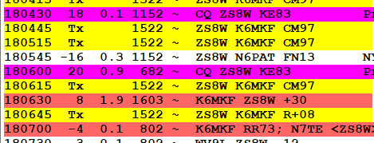
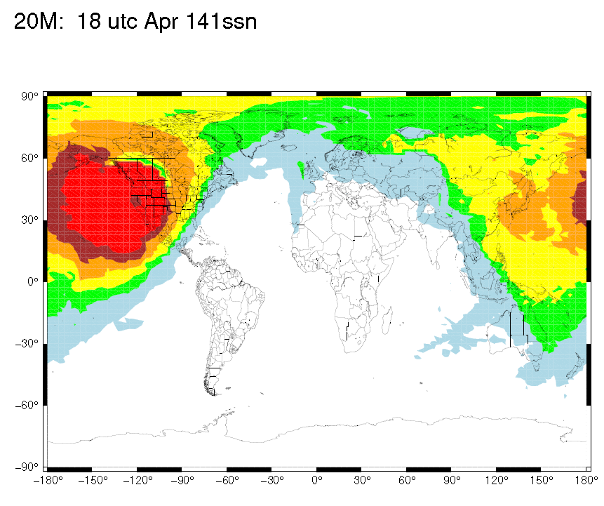
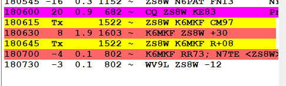

-----Original Message-----
From: <al.n6ta@gmail.com>
Sent: Apr 28, 2025 11:42 AM
To: 'Mike Flowers' <mike.flowers@gmail.com>, 'Chat NCDXC' <chat@ncdxc.org>
Subject: Re: [NCDXC Chat] FW: DX SPOT: ZS8W on 14.087 in FT8 at 2025-04-28 18:06:00Z (ZS8: Prince Edward & Marion Islands)
Yeah, those signal levels are very strange. I have sometimes seen a short peak and then gone, so it could be that. Two nights ago, at 9 PM, a 4X went from weak to -5 dB and then fell off the table in 2 minutes.
Al N6TA
From: Chat <chat-bounces@ncdxc.org> On Behalf Of Mike Flowers via Chat
Sent: Monday, April 28, 2025 11:38 AM
To: 'Chat NCDXC' <chat@ncdxc.org>
Subject: [NCDXC Chat] FW: DX SPOT: ZS8W on 14.087 in FT8 at 2025-04-28 18:06:00Z (ZS8: Prince Edward & Marion Islands)
Hi Gang,
My observations about working (perhaps) ZS8W on 14085 this morning.
From: Mike Flowers <mike.flowers@gmail.com>
Sent: Monday, April 28, 2025 11:34
To: 'Ko6Lu Bob Frostholm' <bob@ko6lu.com>
Subject: RE: [NCDXC Chat] DX SPOT: ZS8W on 14.087 in FT8 at 2025-04-28 18:06:00Z (ZS8: Prince Edward & Marion Islands)
Hi Bob,
I could hardly believe it. I was sitting on 14085 watching everyone and his brother call ZS8W, then this happened:

They were 18 then 20, so I called and they came back to me with an 8 signal giving me a +30!
My RR73 came with a -4 signal from them.
It’s 1826 and my last decode of them was at 1814:

Their signals then were -3 to 1. So I saw their signal strength degrade from a 20 to -3 in 10 minutes.
I’m inclined to think this might have been some weird sporadic E event if it’s real, because we shouldn’t have propagation there on 20M now:

The other explanation is that I’ve been played by a slim, but WFWL!!
From: Ko6Lu Bob Frostholm <bob@ko6lu.com>
Sent: Monday, April 28, 2025 11:19
To: Mike Flowers <mike.flowers@gmail.com>
Cc: bob@ko6lu.com
Subject: Re: [NCDXC Chat] DX SPOT: ZS8W on 14.087 in FT8 at 2025-04-28 18:06:00Z (ZS8: Prince Edward & Marion Islands)
Thanks for the spot.... I saw one burst of 9 simultaneous strong replies from them... then total silence 🙁
73,
Bob
Ko6Lu
On 4/28/2025 11:09, Mike Flowers via Chat wrote:
ZS8W on 14.087 in FT8 at 2025-04-28 18:06:00Z (ZS8: Prince Edward & Marion Islands)
-4 into NorCal
If this is really ZS8W, then I’m stoked!!

_______________________________________________Chat mailing listChat@ncdxc.orghttp://mail.ncdxc.org/mailman/listinfo/chat_ncdxc.org